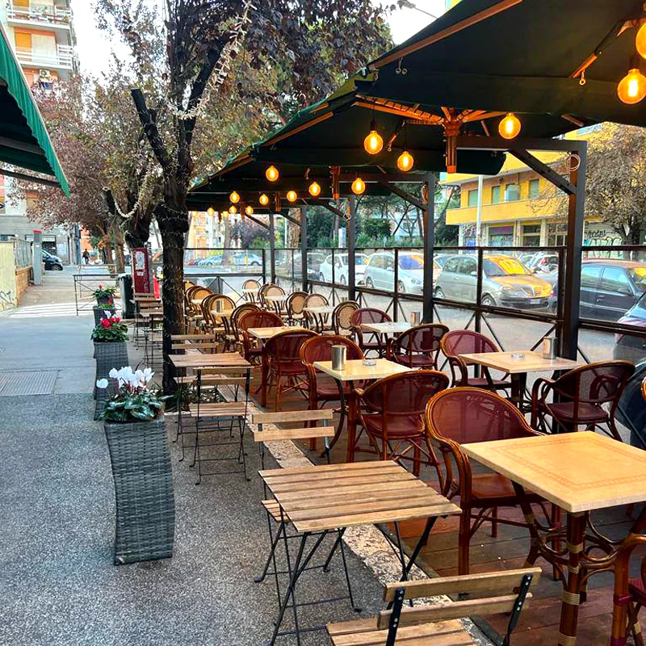
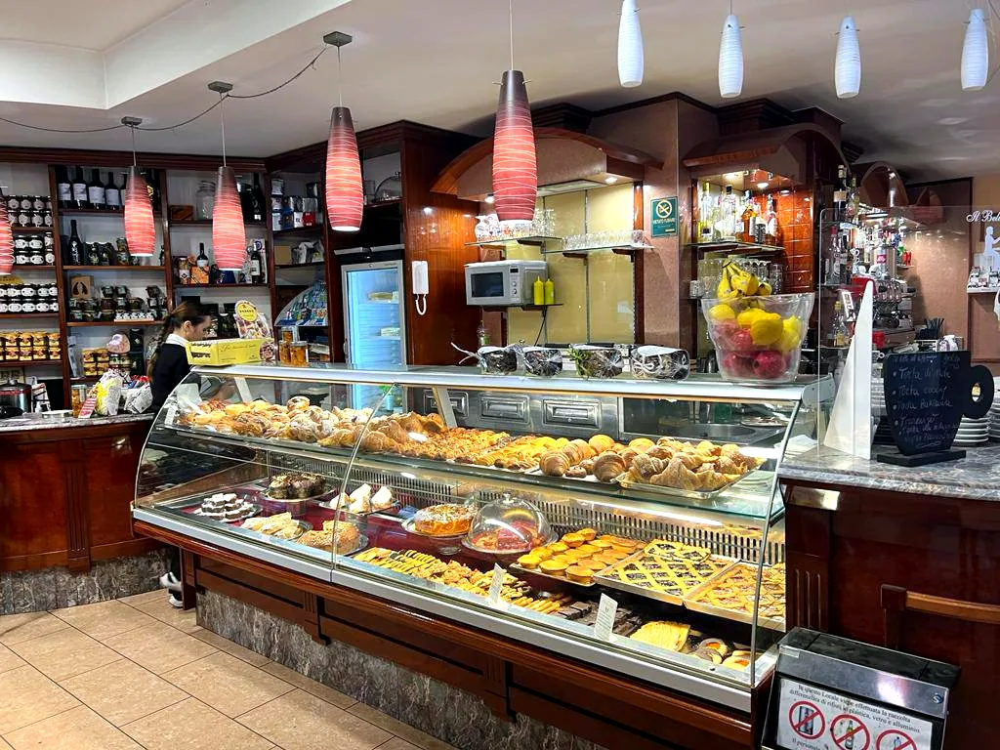
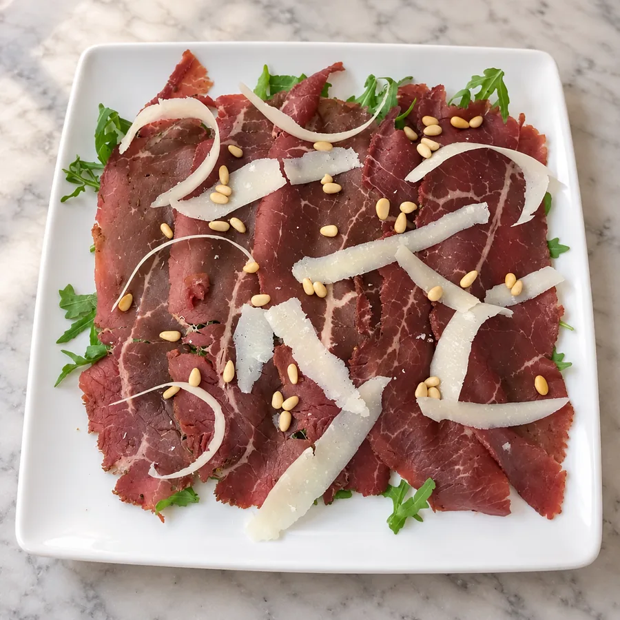
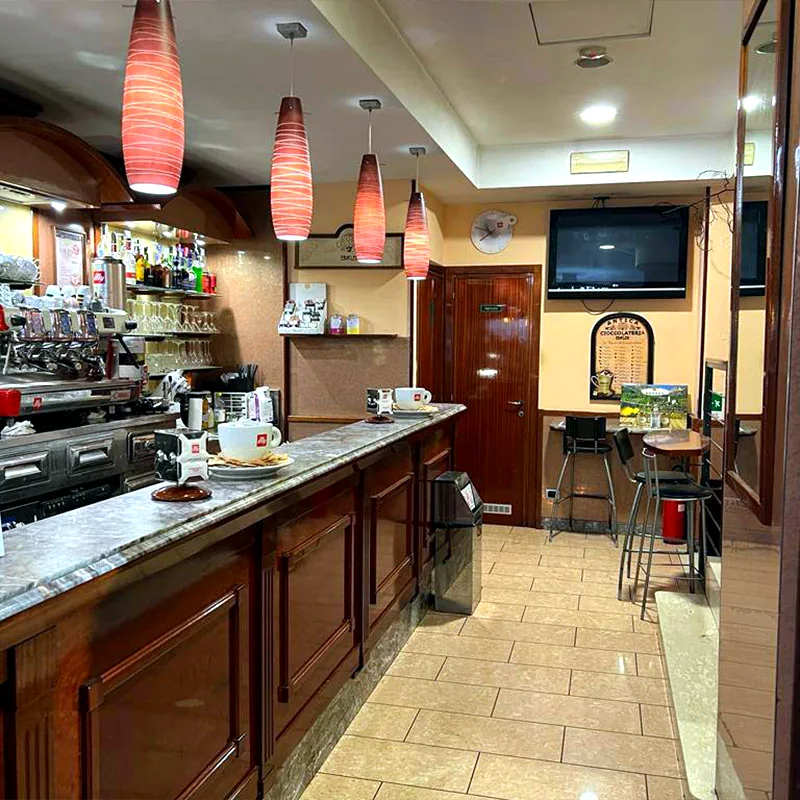
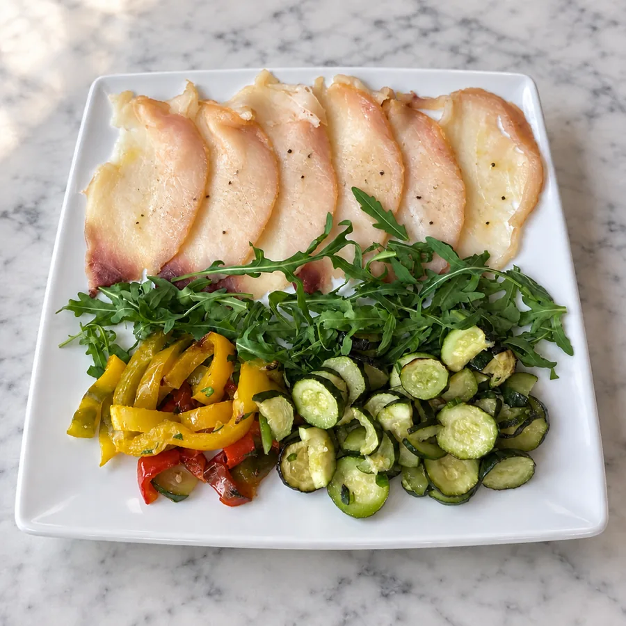
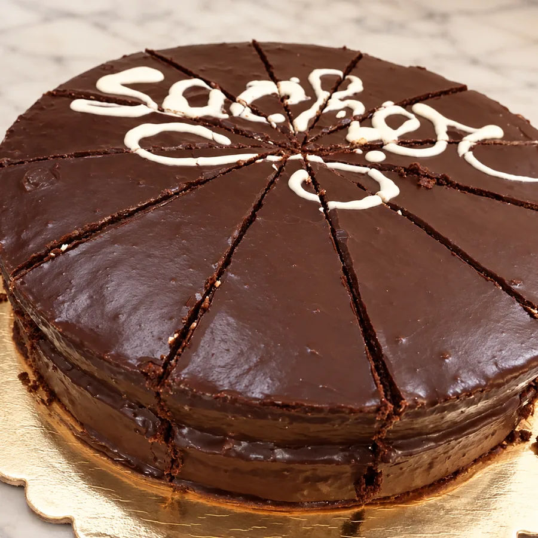

Caffè ottimo, servito con molta cortesia e cordialità, locale ben pulito e curato, compresi i servizi. Dotato anche di spazio esterno. Complicato l'eventuale parcheggio
Bar e tavola calda · dal 2006
Bar e tavola calda a Ostiense – San Paolo
Colazione con caffè Illy dalle 6:30, tavola calda a pranzo e aperitivo in veranda. In via Chiabrera 129, accanto al Cinema Madison.
- Recensioni su Google
- Via Chiabrera 129


dal2006
Cosa trovi, ora per ora
Colazione, pranzo e aperitivo

dalle 6:30Colazione
Cornetti home made, anche vegani e senza glutine, con il caffè Illy di cui siamo rivenditori ufficiali.
La colazione →
a pranzoTavola calda
Ogni giorno 3 primi, 3 secondi e 12 contorni preparati freschi. Al tavolo, da asporto o a domicilio.
Il pranzo → martedì – domenicaAperitivo
Aperitivo Light o Apericena con tagliere, anche in veranda.
L'aperitivo →- Dal 2006 nel quartiere San Paolo
- Illy rivenditore ufficiale
- Vegan e senza glutine
- Veranda all'aperto
Lo dicono i clienti
Le recensioni su Google
Ottimo cappuccino e cornetti freschi. In passato ho provato anche la gastronomia a pranzo, tutto fresco e tutto buono. Il personale sempre gentile ed accogliente. Lo consiglio è accanto al cinema Madison
Ottimo bar, molto bello e accogliente con personale gentile e cortese! Caffè molto buono e tempo fa avevo preso anche dei cornetti, squisiti :-)) si trova inoltre vicino la metro san paolo e le facoltà! E' un piacere venirci ;-)
Ottimo bar in zona San Paolo subito affianco al Cinema Madison. Ottimo il caffè Illy (1,20 euro) e ottimo il brownie (2,50 euro). Cassiere e banconista estremamente gentili e premurosi nel servizio. Lo consiglio e ci tornerò!
Ambiente semplice, servizio molto attento e cordiale, cibo molto buono e prezzi onesti. Quelle poche volte, che all'ora di pranzo, capito da queste parti, vengo sempre qui!! BRAVI!!!! 👏👏👏
Ho preso un ottimo caffè ed ho visto esposti prodotti di qualità alta di aziende alimentari da me conosciute e qualificate a livello nazionale
È il mio bar preferito in zona. Molto fornito dalla colazione, alla pausa pranzo all'aperitivo. Tutto ciò che ho assaggiato era ottimo. C'è un'atmosfera tranquilla e accogliente che mi fa sentire a casa con il personale sempre sorridente e attento alle esigenze dei clienti. Altro grande pregio: è aperto anche di domenica mentre tanti altri bar in zona sono chiusi! Assolutamente da provare
Un locale d'altri tempi, con grandissima gentilezza e competenza. Consigliatissimo per un aperitivo generoso e del tutto ragionevole quanto a prezzi.

Chi siamo
Dal 2006 in via Chiabrera
Il Bello del Caffè apre nel 2006 in via Chiabrera con la voglia di dare al quartiere San Paolo un servizio di qualità.
Il caffè è Illy, i cornetti sono home made e a pranzo il menù cambia ogni giorno. Al banco vendiamo anche prodotti artigianali: De Vivo, Giuliano Tartufi, il cioccolato Venchi, vini e liquori.

Per uffici e feste
Catering e finger food
Finger food e menù personalizzati per eventi aziendali, apericene e feste di compleanno. Su richiesta anche il personale.
Il catering →
Da regalare
Prodotti artigianali e cesti
De Vivo, Giuliano Tartufi, cioccolato Venchi, vini e liquori. Componiamo anche cesti personalizzati per le ricorrenze.
I prodotti →Dove siamo
Via Gabriello Chiabrera 129, Ostiense – San Paolo
Orari di oggi
| Lunedì | 6:30 – 15:30 |
|---|---|
| Martedì | 6:30 – 21:30 |
| Mercoledì | 6:30 – 21:30 |
| Giovedì | 6:30 – 21:30 |
| Venerdì | 6:30 – 21:30 |
| Sabato | 6:30 – 21:30 |
| Domenica | 6:30 – 21:30 |
- Cinema Madison accanto a noi, al civico 121
- Metro B Basilica San Paolo a circa 5 minuti a piedi
- Basilica di San Paolo fuori le Mura a circa 10 minuti a piedi

Via Gabriello Chiabrera 129
00145 Roma
Domande frequenti
Domande frequenti
A che ora aprite la mattina?
Apriamo tutti i giorni alle 6:30. Il lunedì chiudiamo alle 15:30, da martedì a domenica alle 21:30.
Avete cornetti e dolci senza glutine o vegani?
Sì: cornetti, fagottini, tortine e crostate anche in versione vegana o senza glutine. La scelta del giorno la trovi al banco.
Fate asporto e consegna a domicilio?
Sì, la tavola calda si può portare via oppure farsi consegnare a domicilio. Chiamaci per ordinare.
Posso chiedere un piatto per una dieta particolare?
Sì, su prenotazione telefonica.
Si può stare all'aperto?
Sì, abbiamo una veranda coperta su via Chiabrera, con tavolini per colazione, pranzo e aperitivo.
Come si arriva con i mezzi?
La fermata Basilica San Paolo della metro B è a circa 5 minuti a piedi. Siamo accanto al Cinema Madison.